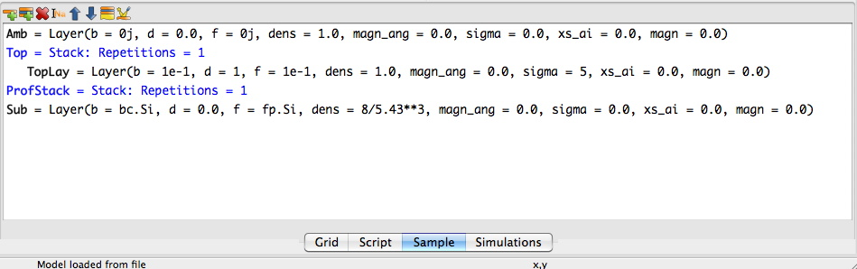

Slicing¶
Introduction¶
Sometimes one have a analytical expression for how the sample should look like and one wants to calculate the
reflectivity from the sample without having to resort to go through the algebra to try to get the closed form
expression. A simple way of solving this problem is to calculate the scattering length density profile and for
many thin slicing and inserting this sliced profile into the sample. In the following I will describe how to do this.
The gx file for this tutorial is available here.
First of all we will need an analytical formula. Here I have chosen an exponentially damped sinus function to model the scattering length density,
Defining the sample¶
First we create a sample with a substrate and stacks for the ordinary layers. For the part that should be sliced up an empty stack is created, see below:
Adding some custom parameters¶
Next we have to add some custom parameters to our model. cp.rho_amp_x is the modulation amplitude for x-rays,
cp.rho_amp_x is the modulation amplitude for neutrons , cp.tau is the damping constant in the
exponential term and cp.period is the period of the sinus wave. You add the custom parameters by
going to the Simulations tab and push on the blue nut in the toolbar.
Modifying the script¶
The script has to be modified. First of a function that calculates the sld function should be defines. Here I have used a function that does it both for neutrons and x-rays. First, however, wee need to import array handling routines.
from numpy import *
def profile(z):
rho_x = cp.rho_amp_x*exp(-z/cp.tau)*sin(z*2*pi/cp.period)+cp.rho_amp_x/2
rho_n = cp.rho_amp_n*exp(-z/cp.tau)*sin(z*2*pi/cp.period)+cp.rho_amp_n/2
return c_[rho_x, rho_n]
Next we define the z-positions that the profiles should be sliced up at:
z_max = 100 # AA
stepsize = 0.5 # AA
z = arange(0, z_max, stepsize)
stepsize define the slice depth of our thin layers. Then in the Sim function we do the actual calculation
of the sld of each layer and creates a list of layers. Then we add all the layers to the ProfStack.
layers = [model.Layer(dens = 1, f = rho_x, b = rho_n, d = stepsize) for rho_x, rho_n in profile(z)]
ProfStack.setLayers(layers)
The entire script should look something like this:
import models.spec_nx as model
from models.utils import UserVars, fp, fw, bc, bw
from numpy import *
# Define a function
def profile(z):
rho_x = cp.rho_amp_x*exp(-z/cp.tau)*sin(z*2*pi/cp.period)+cp.rho_amp_x/2
rho_n = cp.rho_amp_n*exp(-z/cp.tau)*sin(z*2*pi/cp.period)+cp.rho_amp_n/2
return c_[rho_x, rho_n]
# Define an z-array
z_max = 100 # AA
stepsize = 0.5 # AA
z = arange(0, z_max, stepsize)
# BEGIN Instrument DO NOT CHANGE
inst = model.Instrument(footype = 'no corr',probe = 'x-ray',beamw = 0.01,resintrange = 2,
pol = 'uu',wavelength = 1.54,respoints = 5,Ibkg = 0.0,I0 = 1.0,
samplelen = 10.0,restype = 'no conv',coords = 'tth',res = 0.001,incangle = 0.0)
fp.set_wavelength(inst.wavelength)
#Compability issues for pre-fw created gx files
try:
fw
except:
pass
else:
fw.set_wavelength(inst.wavelength)
# END Instrument
# BEGIN Sample DO NOT CHANGE
Amb = model.Layer(b = 0j, d = 0.0, f = 0j, dens = 1.0,
magn_ang = 0.0, sigma = 0.0, xs_ai = 0.0, magn = 0.0)
TopLay = model.Layer(b = 1e-1, d = 1, f = 1e-1, dens = 1.0,
magn_ang = 0.0, sigma = 5, xs_ai = 0.0, magn = 0.0)
Sub = model.Layer(b = bc.Si, d = 0.0, f = fp.Si, dens = 8/5.43**3,
magn_ang = 0.0, sigma = 0.0, xs_ai = 0.0, magn = 0.0)
Top = model.Stack(Layers=[TopLay], Repetitions = 1)
ProfStack = model.Stack(Layers=[], Repetitions = 1)
sample = model.Sample(Stacks = [ProfStack ,Top], Ambient = Amb, Substrate = Sub)
# END Sample
# BEGIN Parameters DO NOT CHANGE
cp = UserVars()
cp.new_var('rho_amp_x', 2e-1)
cp.new_var('rho_amp_n', 2e-1)
cp.new_var('period', 30)
cp.new_var('tau', 10)
# END Parameters
def Sim(data):
# Lets do the Slicing
layers = [model.Layer(dens = 1, f = rho_x, b = rho_n, d = stepsize) for rho_x, rho_n in profile(z)]
ProfStack.Layers = layers
I = []
# BEGIN Dataset 0 DO NOT CHANGE
inst.setProbe('x-ray')
I.append(sample.SimSpecular(data[0].x, inst))
# END Dataset 0
return I
Then all the modifications are done and pressing simulate should generate a nice looking reflectivity and a sld looking something like this:

That’s it, the model is also available here for anyone to test out. However due to a bug in the
pickling module there might be problems to open it on windows machines.